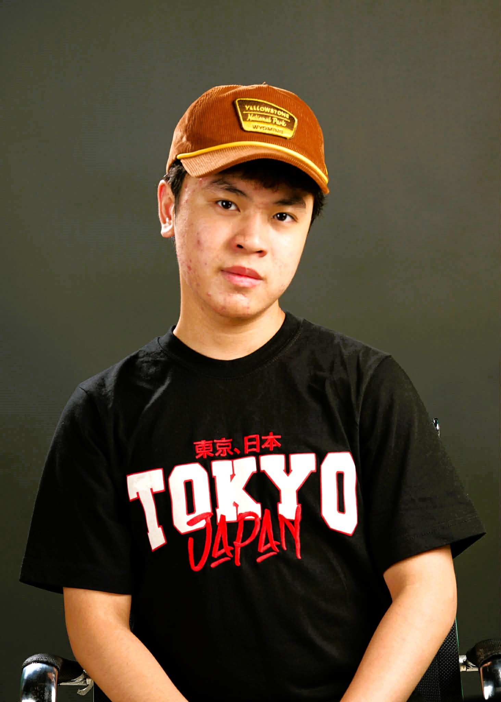
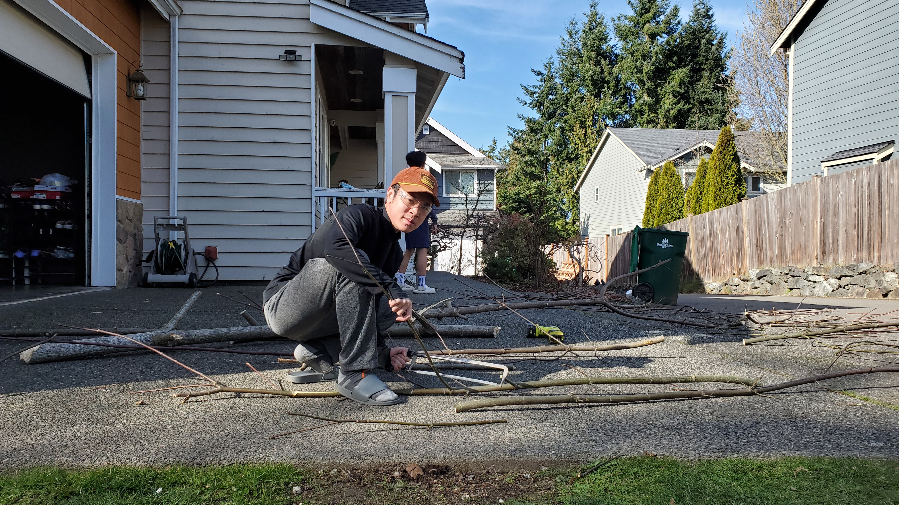
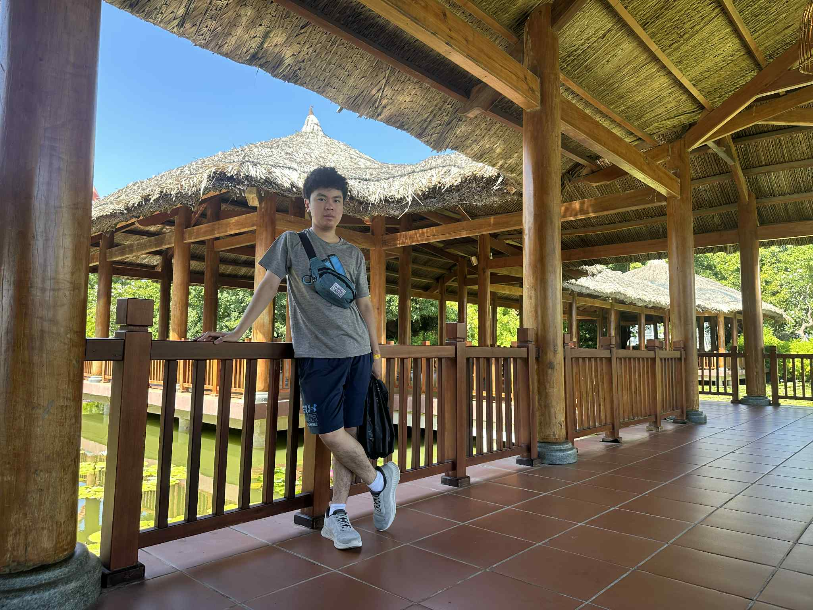

Portfolio Website (Draft)

I'm a student interested in computer science and engineering, with a focus on learning
how to solve problems through code.
After moving to the United States, I had to adjust to a new language and
environment, which shaped how I approach challenges—with patience, persistence,
and a willingness to keep improving.
I enjoy building small projects, including games like Snake and Tic-Tac-Toe, as well as
programs that solve math and algorithmic problems. Through these, I've developed a
strong foundation in programming and logical thinking.
I'm especially interested in continuing to grow my skills and eventually using technology
and engineering to build tools that are practical and meaningful.

James/Jamie Nguyen
Shoreline, WA | mtnguyen010921@gmail.com
- Shorecrest Highschool — Shoreline, WA
- Expected Graduation: 2026
- GPA: 3.6-3.7
- Coursework: AP Computer Science, AP Calculus, AP Physics (10 APs total)
Calculator (Python)
- Developed a calculator application in Python capable of performing basic arithmetic operations, including addition, subtraction, multiplication, and division
- Implemented user input handling and error checking to ensure accurate calculations and a smooth user experience
Tic-Tac-Toe (C++)
- Developed a console-based Tic-Tac-Toe game supporting two-player turn-based gameplay
- Implemented game board management, move validation, and automated win/draw detection
- Utilized C++ functions, arrays, and control structures to create efficient and maintainable game logic
Chess (python)
- Built an interactive chess game using Python and tkinter
- Implemented core game mechanics, including legal move generation, check/checkmate detection, castling, and pawn promotion
- Applied game's logics and principles, similiar to the original chess game
- Applied the display of the status of the game and the players
Guardian Pharmacy — Part-time Employee
- Developed responsibility, communication, and teamwork skills
- Managed tasks efficiently in a fast-paced environment
\
- Coding Languages: Python, Java, C++
- Tools: Git VS Code
- Interests: Software development, problem-solving, user-focused design, Engineering (any kind)
